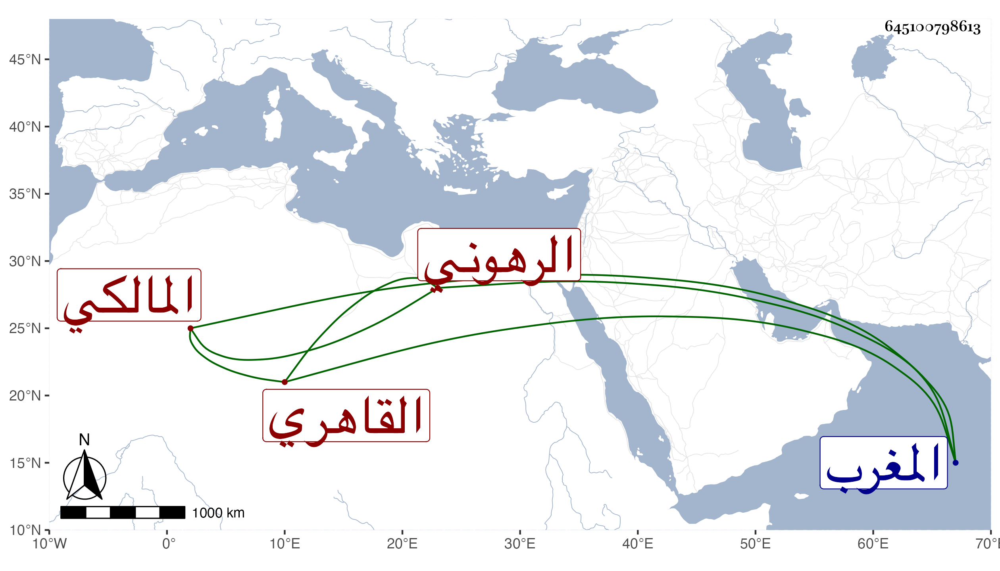

0902Sakhawi.DawLamic.ITO20230111-ara1.EIS1600.645100798613
Biography ID: 645100798613
597
محمد بن علي البدر بن القاضي نور الدين الرهوني نسبة لقبيلة بالمغرب القاهري المالكي أحد النواب . ممن حفظ القرآن وابن الحاجب وغيره وأخذ عن أبيه والبساطي وغيرهما ، وناب عن البساطي فمن بعده ، وكان فهما فاضلا في الفقه والفرائض والعربية لكنه كان زائد التهور في أحكامه شديد الإقدام على ما يجبن غيره عنه خصوصا التعاذير حتى كان يندب لذلك ممن يروم بعض الرؤساء الانتقام منه فعل ذلك بالشمس الديسطي المالكي مع خفة روح ومزاح وهيئة مزرية ولم يشتهر بدين ولا تقوى . مات في سنة سبعين وأظنه جاز الستين عفا الله عنه .
